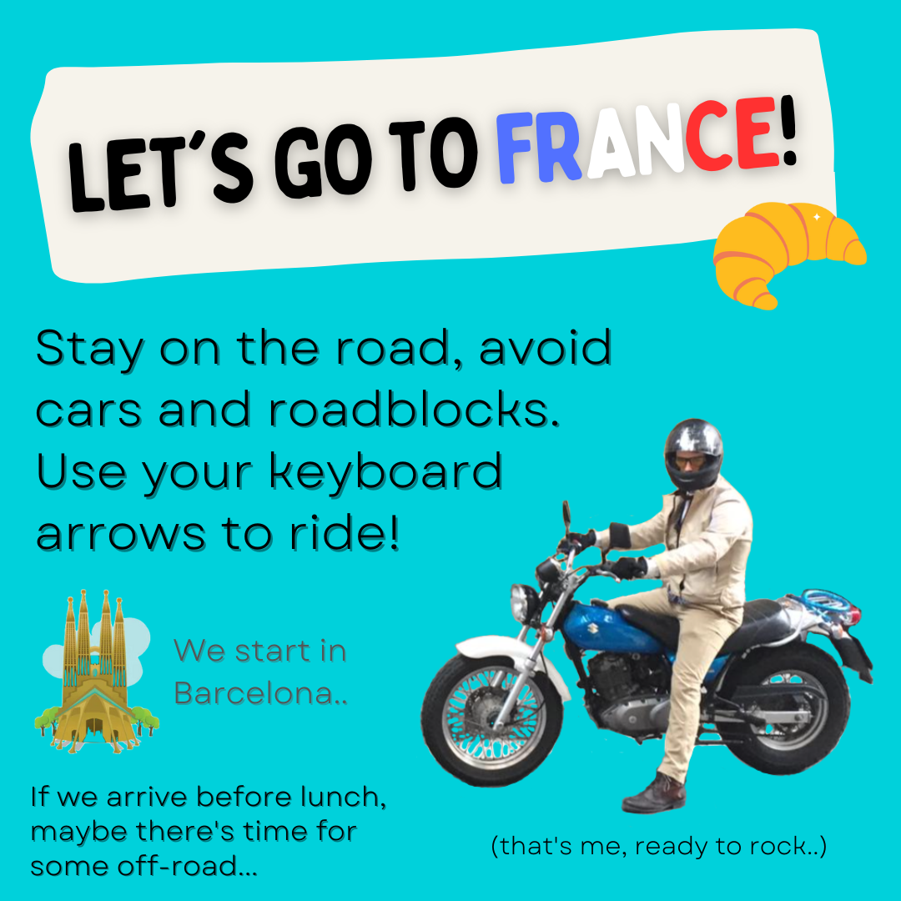
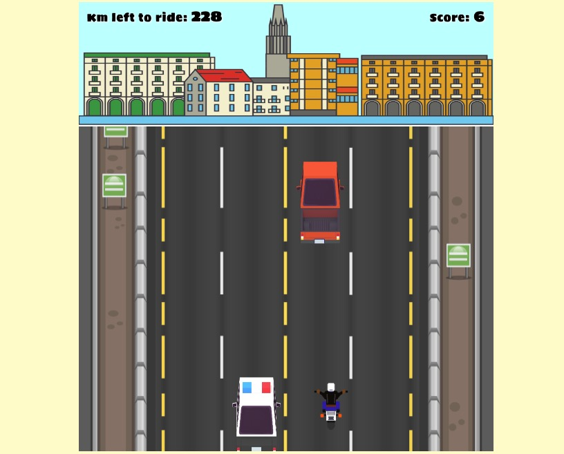
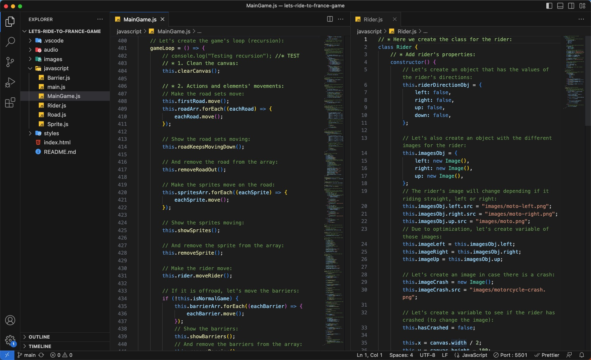

Let's Ride to France Game
This is a fun game where the player needs to avoid traffic on the highway from Barcelona to Toulouse (France). When reaching different cities (Girona and Toulouse) there will be more traffic which makes it more difficult for the motorcycle not to hit cars or roadblocks. If we crash, there will be an ambulance taking care of us, so we have a second chance either to try again or to train in an off-road environment. Here the sprites changes and we can not hit the barriers. If all the km are completed, the player wins, showing the score at the end (how many vehicles were avoided).
This was the Module 1 project of Ironhack's Web Developer Bootcamp. It was built using HTML, CSS, JavaScript, DOM Manipulation, JS Canvas, JS Classes, JS Audio() and JS Image().
This was by far the project where I had the most fun building. Being able to use JavaScript classes and make sprites move on the canvas with functions, was really a delightful experience. It was a lot of work with the styles and designs but I was really proud of the result. And I play the game every week so I try to reach the end of the second level!